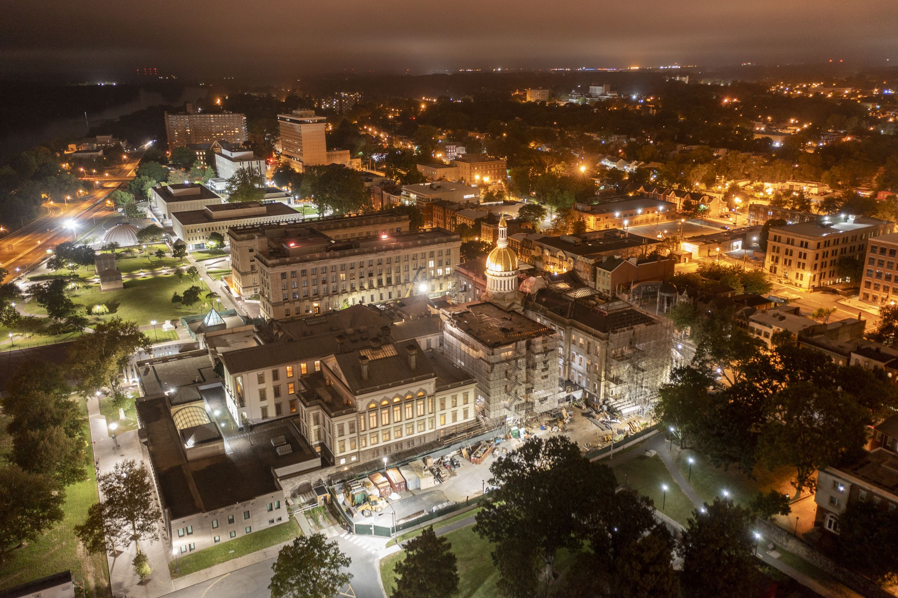
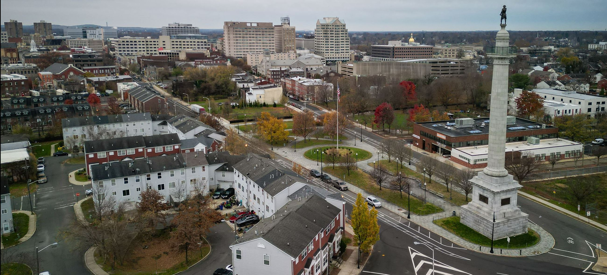

ABOUT TRENTON
Trenton, the official capital of NJ, is located near the geoprahic center of the state. It was incorporated in November 13, 1792. Trenton belongs to the Mercer County region. It is categorized as an urban city and since 2023, there are more than 89,620 people living in Trenton.
In addition, average household income is BELOW the state average. Putting this in numbers, the median family income in Trenton was about $115,227, which is slightly higher than NJ's median of $110,102

